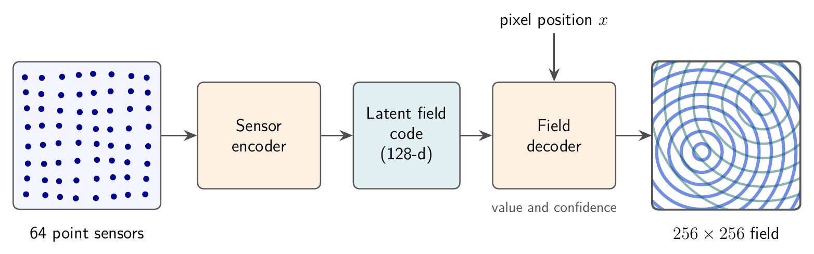

Abstract
Quillwave reconstructs a full 256×256 ripple field from 64 point sensors. Ripple fields are procedurally generated sums of interfering circular waves: cheap to synthesise, but hard to interpolate, because the wave fronts between sensors are lost by smooth interpolation. Quillwave encodes the sensor readings into a 128-dimensional latent field code and decodes it with a coordinate-based field decoder. On RippleBench-Synthetic, a benchmark of 500 synthetic test fields generated for this work, Quillwave reaches 29.46 dB PSNR and 0.887 SSIM, 5.41 dB above radial-basis interpolation (the best baseline), which is a 71.2% lower mean squared error. It is also 1.36× faster than radial-basis interpolation at inference. All results are on synthetic fields only.
Video
Transcript
[00:01] Quillwave is a fictional project, made as synthetic test material.
[00:06] The task: recover a full 256x256 ripple field from only 64 point sensors.
[00:10] Simple interpolation blurs the wave fronts between the sensors.
[00:14] Quillwave encodes the sensor readings into a compact latent field code.
[00:19] A field decoder then predicts a value and a confidence at every pixel.
[00:24] Left: linear interpolation of the sensors. Right: Quillwave.
[00:28] The wave fronts stay sharp as the sources move.
[00:32] On RippleBench-Synthetic, Quillwave reaches 29.46 dB PSNR.
[00:35] That is 5.41 dB above radial-basis interpolation.
[00:39] Limitations: all results are on synthetic fields only.
[00:42] The baselines are not compute-matched, and the confidence map is not calibrated.
Method

The 64 sensors sit on a regular 8×8 grid. Each sensor contributes a token made of its position and its reading; a set encoder with shared weights and attention pooling turns the tokens into a 128-dimensional latent field code that does not depend on the order of the sensors. The field decoder is coordinate-based: for any pixel position, encoded with sinusoidal features, it combines the position with the latent code and predicts the field value and a confidence score. Training minimises the mean squared error to the ground-truth field, plus a ranking term that asks the confidence to be lower where the error is larger. The full model has 1.2M parameters and is trained on 2000 synthetic fields for 200 epochs. The ablation Quillwave-Lite removes the latent code and conditions the decoder on the raw readings directly.
Results
RippleBench-Synthetic is a procedurally generated benchmark of 256×256 sums of damped circular waves, with 2000 training and 500 test fields. Learned models are trained 5 times with different seeds and we report the mean. With 64 sensors, Quillwave improves PSNR by 5.41 dB over radial-basis interpolation, the best baseline, a 71.2% reduction in mean squared error. At 4.7 ms per field it is 1.36× faster than radial-basis interpolation, though slower than linear interpolation. Quillwave-Lite reaches 27.82 dB, so the latent field code accounts for part of the gain.
Table 1. Reconstruction quality on RippleBench-Synthetic (64 sensors, 256×256 fields, mean over 5 training runs). Higher PSNR and SSIM are better; lower runtime is better. Best value in each column in bold.
| Method | PSNR (dB) ↑ | SSIM ↑ | Runtime (ms) ↓ |
|---|---|---|---|
| Linear interpolation | 21.37 | 0.612 | 0.8 |
| Radial-basis interpolation | 24.05 | 0.701 | 6.4 |
| Quillwave-Lite (ablation) | 27.82 | 0.834 | 3.1 |
| Quillwave (ours) | 29.46 | 0.887 | 4.7 |
Table 2. PSNR (dB) on RippleBench-Synthetic as the number of sensors changes (256×256 fields). Quillwave is the best method at every sensor count.
| Method | 16 sensors | 32 sensors | 64 sensors | 128 sensors |
|---|---|---|---|---|
| Linear interpolation | 16.92 | 19.10 | 21.37 | 23.88 |
| Radial-basis interpolation | 18.44 | 21.26 | 24.05 | 26.71 |
| Quillwave-Lite (ablation) | 21.03 | 24.67 | 27.82 | 30.15 |
| Quillwave (ours) | 22.58 | 26.31 | 29.46 | 31.94 |


Comparison Clips
Two more silent loops of moving ripple fields. Each clip shows linear interpolation of the 64 sensors (labelled Input, with the sensors as white dots) next to the Quillwave reconstruction from the same readings.
Limitations
- Baselines are not compute-matched. Quillwave is trained for 3.5 GPU-hours, while the interpolation baselines need no training at all.
- Synthetic fields only. Every result is on RippleBench-Synthetic; no real sensor data was used, and behaviour on real measurements is unknown.
- Confidence is not calibration. The per-pixel confidence map that Quillwave outputs has not been checked against observed error rates, so it should not be read as a calibrated probability.
BibTeX
@inproceedings{placeholder2026quillwave,
title = {Quillwave: Sparse-Sensor Reconstruction of Synthetic Ripple Fields},
author = {Ada Placeholder and Ben Example and Cleo Sample},
booktitle = {Proc. FCSV 2026 (Fictional Conference on Synthetic Vision)},
year = {2026},
url = {https://quillwave.example.org/},
note = {Fictional entry for testing}
}